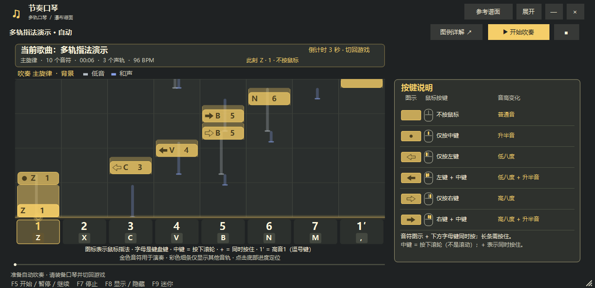
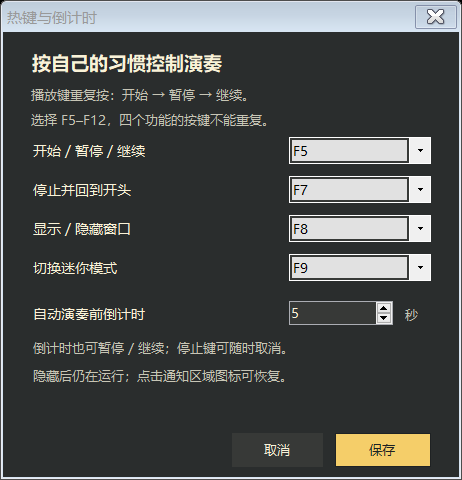

使用指南
大瀑布怎么读，指法怎么按
版本 1.8.3.0：先选明确的主旋律 MIDI 并试听，再按当前与下一音指法跟谱。左侧鼠标图例同步高亮，试听与导出按口琴实际音域保留休止。录音仍是“连续旋律估计”，需要试听确认。F8 收起／恢复，F9 切换迷你；自动会话中先按 F7 停止再点击设置。
更新日期： · 本轮优化与验证记录
参考谱面图采用当前控件与合成示例音符；其他在线曲库、音频转换等图片沿用历史版本，操作以文字说明为准。
快速开始
- 打开并选谱：双击
节奏口琴.exe。选内置曲目，或点击“导入 MIDI”；从声轨列表选择主旋律，先“离线试听”。同目录重复打开会激活原有窗口。 - 打开参考谱面：点击标题栏“参考谱面”。曲库与设置收起，窗口调整为 1280×620、75% 不透明度；屏幕工作区不足时会缩小。原有初始尺寸与透明度只有在点击这个入口时才改变。
- 开始跟谱：点击“开始跟谱”或按开始热键（默认 F5）。下落音符底端碰判定线时按对应列键盘；需要鼠标修饰的音符同时按住相应鼠标键。长音到尾端经过判定线才松开。按 F9 或点“展开”返回完整界面。
需要更多歌曲时
- 在默认的第一个“QQ / 酷狗搜歌”页选择来源并搜索。选定歌曲版本后，先看下方已有主旋律谱；歌名、歌手与版本符合推荐条件时点“选用主旋律 MIDI”。Live 或其他编配须明确选择，录音转录则独立点“下载录音 → MIDI”；下载、转录与写入曲库仍在同页完成。查看选谱与版本确认。
- 需要其他编配时切换第二页“备用中文 MIDI”搜索 909 条 POP909，或末页“备用免费谱”搜索 Mutopia。确认歌手、编配版本后下载，不能把同名翻唱谱当成原唱同一录音。查看选谱步骤。
- 已有 MIDI 文件时，点击“导入 MIDI”，选择
.mid或.midi；一次最多 100 个。相同内容复用已有项，单个失败不会撤销其他成功项。文本简谱可通过“简谱/音频 → 新建文字简谱”校验保存。 - 从声轨列表选主旋律，POP909 通常先选 MELODY，再点“离线试听”。编配的节奏与调性可能不同于所选录音，伴奏混在一起时先换轨。每次试听最多 600 实际秒、20000 音符，过长时先截段。
- 按需要调节速度、移调和窗口不透明度。默认手动模式：点击“开始跟谱”或按 F5，根据金色音符自己演奏；再次按同一个 F5 暂停，再按继续，F7 停止并回到开头。自动模式的操作说明见下文。
手动跟谱与试听时，谱面底部进度线支持点击定位；自动吹奏中不能跳转。改变旋律轨、移调等演奏设置会停止当前演奏，确认新设置后重新开始。谱面从第一个实际音符计时，开头空拍会被移除。
完整 MIDI 按文件中的真实音符载入。26 首内置主题是短片段，不是所有歌曲的长度上限；软件没有统一截成 40 个音符的规则。需要整曲时选完整 MIDI，或用完整普通录音转录后试听修正。
MIDI 支持标准格式 0／1 和 PPQ 时间格式，单文件上限 16 MB、总时长上限 4 小时、最多 1024 轨及 200000 个音符。SMPTE 时间格式与 MIDI 格式 2 暂不支持；打击乐通道不作为旋律轨导入，弯音与踏板延音未解析。
多个声轨如何显示与演奏
瀑布会同步显示 MIDI 各轨：其他轨以不同配色显示在背景，所选轨突出显示。吹奏下拉标为“主旋律”，只保留有音符的明确主旋律角色，实际演奏与试听只用所选单旋律。POP909 默认优先 MELODY。未知 MIDI 没有角色标记时，最多提供一条有单音连续性依据、明确标为不确定的旋律候选，须试听；鼓、低音和明确伴奏不进入吹奏列表。PIANO、BRIDGE 仍在背景瀑布显示。没有可解释单音候选的文件会拒绝载入，可能是伴奏、鼓点或复音编配，不将拒载一律当作伴奏识别结果。
明确的 MIDI 所选轨在同一时刻有和弦时保留最高音，前后音重叠时缩短前一音，可能把高音伴奏当成旋律。录音先估计连续单旋律，但音高支持概率不能识别主唱身份，弱人声与强伴奏同时出现时仍可能选错。优先选择标为 MELODY／主旋律／人声的声轨并试听；不要把 PIANO 伴奏轨或大量低音直接当成唱旋律。
本机试听由程序合成声音，不代表游戏口琴的音色、响度或实际按键效果。
低音太多或旋律不对：先查找主旋律谱
- 在“我的曲库”选中曲目并右键，点“查找主旋律谱（保留原谱）”；程序在在线歌曲页查找现成编配，保留当前曲目与 MIDI。
- 核对下方候选的歌名、歌手与编配说明。明确匹配的推荐项使用“选用主旋律 MIDI”；其他歌手、Live 或待确认编配须自行选择“采用此编配 MIDI”，或选用已有本地谱。
- 成功后回主窗选择 MELODY，用“离线试听”先听短段。钢琴编配的调性、时序和段落可能与原录音不同，尤其不能直接当作 Live 原谱。
- 谱下载失败时重试所选编配或导入自己的 MIDI；程序不会暗中改成录音转录。确实要用录音估计时，再明确点“下载录音 → MIDI”。
《父亲》已加入“POP909 · 筷子兄弟 · 主旋律乐谱（钢琴编配） · 3 个声轨”，默认 MELODY 有 425 个音、音高 59–80，只有 10 个低于基准音 60，默认移调 0、跳过 0。此结果核对了官方谱文件，不代表用户旧录音转录已修复或听感已经验证。查看实际源谱记录。
主旋律谱目录不覆盖所有歌曲；没有对应版本时，可换清晰人声／单乐器录音再估计，或自行导入乐谱。移调和音域适配不能把错误伴奏变成正确主旋律。查看同页选谱规则。
截取片段，设定实际播放时长
- 载入乐谱，点击主界面“片段时长”。
- 填写“片段起点（秒）”与“片段终点（秒）”，按当前谱面秒数填写，不用按速度换算；开头空拍已按所选轨移除。
- “播放总时长（秒）”填写希望实际播放的秒数；0 表示片段自然一遍。超过片段一遍的目标，须勾“循环片段，直到指定总时长结束”。
- 点击“应用时长”，当前播放会停止。需要回到整曲，点“恢复整首”，再应用。
例如截取谱面第 20–40 秒，设实际总时长 60 秒并勾循环：1 倍速为三遍；改到 1.5 倍速后会重建计划，实际目标仍为 60 秒。最后一遍可截到指定结束时刻，片段中的休止保留。
多轨瀑布与所选旋律一起截段、循环，手动跟谱、自动吹奏、试听和 MIDI 导出共用同一计划。切换新歌曲会恢复整首一遍；试听仍受每次 600 秒／20000 音符限制，循环后也受 4 小时与音符数量上限约束。
默认自然播放到所选主旋律末音结束。背景轨按同一周期裁齐，不因后面的钢琴或其他伴奏继续等下去；到计划末端后，播放状态回到停止，释放自动按键。曲中正常长休止保留；主动设置的片段、循环或目标总时长仍按你的边界执行，不将没有当前音符的间隙误判为结束。
每次播放的通知独立绑定本轮会话：完成后的旧倒计时不会盖掉结束说明，上一轮迟到的完成通知不会结束新一轮。后端已经结束时，界面同步收敛到停止并恢复普通窗口交互，即使最后一条通知延迟也不保持空转。未知复音文件无法提供单音候选时，应另找主旋律谱；这类拒载不能证明文件只有伴奏。
自己指定的范围优先。设置片段、循环或实际播放总时长后，不让“自动略过无效尾音”擅自缩短该边界。完整自然播放时才考虑疑似尾部整理，强尾奏、连贯弱尾奏和长音保留；关闭该选项可恢复原尾部。查看尾部选项。
参考谱面：八列瀑布与六种指法
点击标题栏“参考谱面”，收起曲库与设置，用较大的长方形窗口读谱。面板为暖灰色，边框、判定线与主旋律为金色；不透明度设置为 75%，数值越小越透明。这个入口会采用 1280×620，实际尺寸受屏幕工作区限制；仍可拖边缩放，F9 或“展开”恢复完整视图。谱面顶部的“图例详解 ↗”可直接打开本节，不需要联网。

先看列，再看底端什么时候碰线
八列从左到右是 1、2、3、4、5、6、7、1′，对应 Z、X、C、V、B、N、M、,。最后一个是逗号键，本身对应高音 1。音符块只显示所在列数字与字母，鼠标修饰统一交给六种图示。圆点和箭头与旁边图例完全对应，不需要再读另一套升降音记号。
- 起音：音符从上往下流动，音符底端碰到下方金色判定线时开始按键，不要刚进入屏幕就按。
- 长音：长条表示持续音。起音后继续按住键盘与所需鼠标修饰键，直到音条的尾端经过判定线才松开；条越长，持续时间越久。
- 短音与休止：短块按其时长演奏，两个相邻同列音按各自时刻分开起音。休止处松开键盘与鼠标修饰键，不持续按住上一音。
左侧八键是固定指法说明，右侧判定线下只显示各列数字，不是另一排下落音符；下方不再重复字母键或鼠标组合。当前指法与高亮只提示怎样演奏，不检测你是否按对，也不证明游戏收到了输入。
六种鼠标组合：都要搭配所在列的键盘
左侧常驻的六行图例对应下面六种操作。鼠标中键指把滚轮按下，不是向上或向下滚动。有修饰的音符须在起音时同时按住所需鼠标键，并在长音期间保持。
| 音符提示 | 鼠标操作 | 实际音高 |
|---|---|---|
| 普通块，不带鼠标图标 | 不按鼠标 | 普通音 |
| 圆点 | 只按中键 | 在当前音上升半音 |
| 空心左箭头 | 只按左键 | 降低一个八度 |
| 实心左箭头 | 左键＋中键同时按住 | 降低一个八度，再升半音 |
| 空心右箭头 | 只按右键 | 提高一个八度 |
| 实心右箭头 | 右键＋中键同时按住 | 提高一个八度，再升半音 |
这里的“升／降”不是临时滚动鼠标改变全曲调性：左、右键用于八度，中键用于升半音。图标形状与文字共同说明指法，颜色不是唯一依据。
六个具体例子
- 普通 3：音符为 C＋数字 3，不带鼠标图标；碰线时只按 C。
- 2 升半音：音符为圆点＋X＋数字 2；按 X＋鼠标中键。
- 低音 3：音符为空心左箭头＋C＋数字 3；按 C＋鼠标左键。
- 低音 2 升半音：音符为实心左箭头＋X＋数字 2；按 X＋鼠标左键＋中键。
- 高音 5：音符为空心右箭头＋B＋数字 5；按 B＋鼠标右键。
- 高音 2 升半音：音符为实心右箭头＋X＋数字 2；按 X＋鼠标右键＋中键。
修饰键与键盘属于同一个音，要同时配合。第八列逗号键本身就是高音 1，普通块无需额外按右键；以每个音实际显示的指法为准。
多音轨、密集段和窗口大小
- 主旋律：所选轨用金色长条演奏；其他轨是彩色细条，只用于观察编配，不当作第二份需要按的音符。手动、自动都显示多轨，实际演奏与试听只用所选主旋律。
- 同尺度缩放：完整和迷你均保留左侧六行鼠标图例与八键；谱面、音符、图例、字体按同一比例缩放，必要时留白，不隐藏说明或硬裁。默认迷你 900×390；放大迷你仍预览未来 2 秒，完整预览 4 秒。
- 密集音符：相邻同列音保留独立起音和间隙；空间不足时保留短条，不把字缩小挤叠。连续两个 C 是两个独立音，左侧固定 C 说明按法。
- 定位与倒计时：手动跟谱、试听可点底部进度定位，留白和图例不触发定位；自动吹奏禁止跳转。倒计时在顶栏，播放键可冻结和继续，停止键取消。

界面参考用户提供图片的布局与读谱方式，未复制图片作者署名。歌曲标题与 BPM 来自实际所选谱，不把图片中的歌名或速度设置为默认值。口琴映射尚未实机校准，详见参考键位与音域。
导出当前旋律为 MIDI
- 选好歌曲与旋律声轨，确认速度、移调、音域适配／尾部选项及试听效果。
- 点击主界面的“导出 MIDI”，选择保存位置与文件名。
- 导出标准
.mid文件；可再导入本软件，也可交给支持 MIDI 的编辑器继续调整。
导出包含当前所选轨的可奏音符、已设片段与循环、实际总时长、移调、速度及已启用的音域／尾部整理。仍不可奏的音与试听一样按休止处理，保留前导、中间与计划末尾休止，不把后续音提前；原文件不覆盖，也不包含全部伴奏轨。简谱生成 MIDI 用原音符与 BPM，主界面导出采用当前口琴计划。
下载或选择普通音频，再转 MIDI
- 在“QQ / 酷狗搜歌”选择平台，搜索并确认歌曲、歌手与版本；先查看主旋律谱。确实要从录音估计时，独立点击“下载录音 → MIDI”。
- 保持在同一页等待。状态区依次显示普通音频确认、下载、首次识别组件准备、转录和保存；不用填写 URL，也不再二次打开音频设置窗。完成后按钮变成“立即选用”，点击回主界面。
- 没有直接下载授权时，同页明确提示。QQ 可先用软件内登录入口完成官方 QQ／微信登录，再按实际账号权限重试；也可换版本，或从官方渠道取得普通音频。“官方歌曲页 ↗”仍只是外部详情入口。
- 取得本机普通文件后，在同页点“已有音频转 MIDI”，选择 MP3／WAV／FLAC／OGG。文件选择完成后，组件准备、转录与写入曲库仍在该页进行，不再要求手填下载链接或设置监听目录。
- 正在处理时主按钮可“取消下载 / 转录”。已下载的音频会保留；失败或取消后可点“重试转 MIDI”，无须重复下载已经保存的录音。失败状态会说明可重试、换版本或导入本机普通音频。
- 成功后，音频和 MIDI 在
程序文件/曲目/配对保存；点“立即选用”，先试听并选主旋律，再打开参考谱面。混音可能出现错音、漏音或伴奏音，可导出 MIDI 修正后重新导入。
音频在本机处理，不上传。需要 QQ 账号权限时，在软件内的官方页选择 QQ 或微信登录；账号验证由官方页面处理，软件使用自己的登录会话，失效时提示重新登录，也可退出。“官方歌曲页 ↗”仅打开外部详情，外部浏览器会话不自动同步。登录不保证所有版本都有可用普通音频，也不解密 QMC／MGG／MFLAC／KGM；取得普通文件后才可转录，改扩展名无效。查看登录步骤与当前验证边界。
连续旋律是估计结果。Basic Pitch 的多乐器音高支持概率不区分主唱与伴奏身份。新版只在音区候选具有更充分的连续覆盖、起音与音高变化证据时采用候选；条件严格，但伴奏也可能满足它们。声轨名包含“连续旋律估计”“需试听”，可能同时标出“伴奏难区分”“低音可能干扰”“旋律依据弱”“短音较多”或“候选需核对”。先短段试听，必要时换清晰人声／单乐器版本或使用现成主旋律 MIDI。
短音不按统一时长一刀删除。有清楚起音和持续音证据、至少 40 毫秒的短音可以保留；证据不足的短段仍可能舍弃，但保留原间隙，不将其填成长音，轨名会在达到提示条件时显示“短音未定”。本轮《奇迹再现》12 秒缓存仍有约 59% 短音，未证明听感改善；这些质量提示不是准确度评分。查看实际检查结果。
已有录音：重新转录，保留原 MIDI
- 在“我的曲库”右键有配对录音的曲目，选择“重新转录已有音频（保留原谱）”。没有配对音频记录时该项不可用，可改用“已有音频转 MIDI”选择普通文件。
- 程序读取已保存的本机音频，不重新下载歌曲；打开转换窗口后自动开始，窗口内可取消。
- 成功后新增标题带“连续旋律版”的曲目，原 MIDI 与原曲目保留，列表、数量和当前选择立即更新。先试听并比较两版，再决定使用哪一份；取消或失败不替换旧谱。
版本 1.8.1 的《奇迹再现》35–47 秒、12 秒缓存输出仍为 54 个音、发音总长约 8.342 秒，短音约 59%，未证明这段混音的听感改善。版本 1.8.0 的合成时序与旧混音结构对比保留为历史，不能将其算作本轮主唱准确度或完整歌曲验证。查看当前结果 · 查看版本 1.8.0 历史。
下载限 128 MB／120 秒；转录限 10 分钟／128 MB，长歌先截取需要的片段。官方客户端中的受保护下载不等于可转录的普通文件；只改扩展名无效。QQ 官方客户端下载 · 酷狗官方客户端下载。
版本 1.7.1 历史记录：实际程序目录的自动准备与短 WAV 转录成功。首次准备退出码 0；之后人为缺少完成标记，转换入口复用有效模型、补齐初始化，再把 4.6 秒自合成单声部 WAV 转为 135 字节、1 轨 5 音符的 MIDI。第二次没有再次准备组件，输出 138 字节，两次均成功；字节差来自标题。该版还在隔离曲目目录完成酷狗宋祖英《茉莉花》整曲下载、转录与 MIDI 解析，未加入用户真实曲库。QQ 宋祖英《茉莉花》普通整曲下载与转录也已在隔离目录成功；该版未完成真实账号 QQ／微信登录或会员下载验证；版本 1.7.2 的现有微信会话默认确认属于历史实测；版本 1.7.3 未重新执行账号网络确认，范围另见登录说明。人工听音和游戏实机仍未验证，混音须试听。查看范围与历史。
为什么第一次需要等待？音频识别组件首次转换才自动准备，约占 338 MiB 磁盘，此数字不是下载流量；首次需要联网与足够空间。准备完成后，同一台电脑可离线转换，普通选歌、MIDI 导入与跟谱不需要下载这些组件。软件内官方登录使用本机共享的 WebView2 运行时；SDK 约增加 0.9 MiB，不附带整套浏览器。双击 EXE 的操作不变，版本 1.8.1 启动 EXE 约 1.91 MiB、低于 2 MiB。
版本 1.3 的首次安装继续转录、163 字节／9 音符结果，以及版本 1.2 四格式与取消验证均为历史记录。版本 1.7 修复启动参数与 Windows 长路径整理，在独立临时目录完成 135 字节／5 音符转录及离线安装 22 项；不能用临时目录成功代替用户正式目录已有组件。版本 1.7.1 安装专项 102 项另行覆盖完整性缺项修复与脱敏日志，不计为本轮首次安装实测；本轮验证的是既有模型复用和空间优化。用户无需运行 CMD；这些结果不保证整曲精准识别。

自动吹奏：倒计时、等待切回与前台保护
自动演奏属于模拟按键行为，存在违规和封号风险。普通系统输入、独立窗口和不读取游戏内存，都不能保证合规或免于检测。本软件没有官方授权；当前自动输入的实际游戏效果尚未验证。
- 选好歌曲与主旋律，先试听确认，再切换“自动吹奏”。在“热键 / 倒计时”设置准备时间，默认 5 秒，可设 3–10 秒。统一播放键默认 F5，重复按依次开始、暂停、继续。
- 若离线试听仍在运行或暂停，播放键只控制试听。先按停止键（默认 F7）关闭试听，再按播放键启动自动吹奏。
- 自行打开并准备好口琴。窗口识别不能确认口琴已装备；未准备时鼠标修饰可能触发正常游戏操作。之后点击“开始吹奏”或按 F5，倒计时显示在顶栏；再按 F5 可冻结，再按从剩余时间继续，F7 取消。随后切回游戏。
- 倒计时后最多等待 15 秒切回正确游戏前台。等待时不发送输入、不推进歌曲时钟；播放键可冻结等待，再按继续，停止键取消，超时自动取消。前台窗口标题须包含
三角洲、Delta Force或DeltaForce，并排除浏览器、终端、记事本等常见桌面窗口类别。条件满足且权限检查通过后，程序记录确切窗口句柄，仅在它保持前台时发送对应输入。 - 游戏仍在前台时按同一个播放键（默认 F5）暂停并释放程序按键，再切出游戏。继续前把同一个游戏窗口切回前台，再按 F5。
- 按停止热键（默认 F7）停止并释放程序按键；自动演奏期间切出游戏窗口也会立即停止，需重新开始。
自动会话期间本软件谱面鼠标穿透、不会因演奏修饰键点击而主动夺走前台。此保护包括倒计时、等待、演奏和自动暂停；按钮与拖动暂时不接鼠标。用 F5 暂停／继续、F7 停止，F8 显隐、F9 切换布局；要选歌、移动或改设置，先按实际停止键恢复普通交互。手动跟谱与试听保留鼠标交互。窗口判断仍依据前台标题、类别和确切句柄，不是游戏认证；主动切出游戏仍会停止并释放按键。
停止热键注册失败时，程序会阻止自动开始。系统确认热键已占用时会尝试空闲键，并更新底部实际键位；仍失败时打开“热键 / 倒计时”改设，推荐 F5–F11，F12 为 Windows 调试器保留。修改演奏设置会停止自动演奏；全部音符超出口琴音域时明确拒绝开始，部分超域音符作为休止保留时长。
程序默认以普通用户权限运行，仅查询系统进程令牌的权限元数据；发现目标权限更高时会拒绝并显示原因。微软 SendInput 文档说明输入受完整性级别限制；提交到系统输入流的数量也不代表游戏已接收。可从运行诊断自行选择管理员方式重启，由你确认 UAC；程序不自动提权，不改变游戏保护。实际游戏输入与实际 UAC 重启均未验证。
新建文本简谱
填写歌名和 BPM，将音符用空格分隔，再点击“校验并保存”。BPM 可设 30–240；默认每个音符占一拍。
| 写法 | 含义 |
|---|---|
1 2 3 4 5 6 7 | 基本音级。 |
0 | 一拍休止。 |
| | 小节分隔，便于阅读。 |
可以先用短句确认格式：
1 1 5 5 | 6 6 5:2 | 4 4 3 3 | 2 2 1:2保存后，瀑布会把鼠标指法转换为六种统一图示。演奏时按图示、所在列数字与字母，无需同时辨认高级输入语法。
高级简谱输入：八度、升降音与时值
以下只用于手动录入文本简谱，不是下落音符的显示格式。
| 写法 | 含义 |
|---|---|
1' / 1, | 分别提高／降低一个八度。 |
#4 / b3 | 分别将第 4 音级升半音／第 3 音级降半音。 |
5:2 / 5:0.5 | 分别持续两拍／半拍；冒号后写拍数。 |
拍数须大于 0 且不超过 128；八度符号可重复，同一音符不能混用 ' 和 ,。简谱按 MIDI 60 对应的“1”建立，之后可移调及启用音域适配，无需手填基准音高。
窗口与热键
先选好歌曲与声轨、开启自动吹奏，之后软件保持运行即可在游戏前台按控制键。F5 开始／暂停／继续，F7 停止，F8 显隐，F9 迷你／展开。全局 F8／F9 保留游戏前台；任务栏点击、托盘点击、再次双击 EXE 或主动点击软件则会切到软件。已开始演奏后主动切出游戏仍按前台保护停止。
收起后恢复、切换迷你模式时，程序会先同步完成整个窗口的首帧显示，再继续当前可见瀑布的动画，减少局部黑块与分批出现。收起期间不持续绘制谱面。曲名、时间、按钮与末行热键文字采用与各自区域匹配的字号，避免系统缩放后文字只显示半截。
- 参考谱面：标题栏一键入口，收起曲库与设置，设置 1280×620 与 75% 不透明度；只有点击它才改变这些值。实际尺寸受屏幕工作区限制，F9 或“展开”回完整窗口。
- 窗口尺寸：完整默认 1280×720、最小 1032×620；迷你默认和常规最小 900×390。拖四边、四角或右下抓手保持当前模式比例，分别记忆尺寸，受工作区限制；图例和瀑布整体 Fit，不隐藏说明。
- 不透明度：65–100%，默认 90%。数值越小越透明，100% 完全不透明；参考谱面入口使用 75%，之后仍可调整。
- 始终置顶：尽量保持在普通窗口上方；独占全屏或特殊游戏渲染可能遮挡，不能保证所有模式可见。
- 迷你／展开：收起或恢复曲库与设置，保留同尺度图例、大瀑布与控制；默认 F9切换。
- 热键 / 倒计时：每个动作可选择 F5–F12，动作不能重复，以底部实际键位为准。
- 重复打开：同目录再开 EXE 会恢复原实例，不另开一份争抢热键。
- 移动和点击：普通模式可拖标题栏；自动会话期间鼠标穿透，先按停止键恢复交互。关闭主窗退出并清理自身工作，最小化只收起且保留任务栏入口。
热键注册只有在 Windows 返回 1409（已占用）时才尝试空闲 F 键。其他注册错误会显示实际错误码，便于判断；手动跟谱、暂停、停止与离线试听仍可通过窗口按钮操作。
F8 收起窗口，任务栏按钮一直保留。收起采用最小化，软件继续运行；再按实际显隐键，或点击任务栏按钮即可恢复。也可单击通知区域图标、右键选择“F8 显示窗口”，或重新双击 EXE。曲库、设置或登录窗打开时，收起作用于整个应用，恢复时回到原有窗口。F9 仅切换迷你／完整界面，任务栏入口同样保留。
关闭主窗口或托盘菜单“退出节奏口琴”会真正退出。软件取消进行中的下载、转录和组件准备，关闭设置、选谱、官方登录窗口，释放热键、试听、定时器及托盘，清理自己启动的转录／安装进程及其后代。退出期间的迟到回调不再写入曲库；已有歌曲与 QQ 登录记录保留。单独关闭子窗口仅返回主界面。
要查看热键是否注册，右键托盘图标，选择“热键与运行状态…”。滚动诊断显示实际绑定、触发来源、当前状态与原因；不能仅因按键没有反应就判定冲突。默认 F6 不再是独立暂停键，请用实际播放键（默认 F5）。游戏前台的热键效果尚未完成真实游戏验证。
| 默认热键 | 动作 |
|---|---|
| F5 | 开始／暂停／继续当前播放；自动倒计时与等待游戏同样可以冻结和继续。试听未关闭时只控制试听，自动模式恢复要求同一游戏窗口在前台。 |
| F7 | 停止跟谱、试听或自动输入，取消倒计时与等待，返回开头并释放程序按键。 |
| F8 | 收起／恢复窗口，保留任务栏按钮。 |
| F9 | 切换迷你／完整界面。 |
现在只有四项热键。旧的独立 F6 暂停键不再注册，开始、暂停和继续使用同一个播放键。可配置 F5–F12，但推荐 F5–F11；F12 为 Windows 调试器保留，动作不得重复，以底栏实际绑定为准。微软系统热键说明。
热键采用系统 RegisterHotKey，并仅对四个已成功注册的键使用 GetAsyncKeyState 备用识别；合并两种来源，每次按下到松开只触发一次，避免长按、初始按住、修饰键、迟到消息或重新注册造成重复。注册失败的键不会被备用识别抢占，未使用低层键盘钩子或驱动。备用识别也受系统权限与桌面条件影响，不保证实际游戏中有效。占用后补绑定仍失败时改设；停止键不可用时按钮也不能启动自动演奏，隐藏前先确认显隐键可用。
没有反应时：从托盘查看运行诊断
- 单击通知区域的节奏口琴图标恢复窗口；右键选择“热键与运行状态…”，在可滚动窗口查看实际绑定、最近触发来源、当前播放状态与原因。F8 只收起窗口，任务栏按钮保留；关闭主窗才退出。
- 先确认播放命令已触发，再检查试听、倒计时、等待前台、音域与权限条件。输入提交的音符按下数只记录软件向系统提交的行为，不代表游戏已接收或发声。
- 若诊断明确说明目标权限更高，可自行点击“管理员方式重启”，由你确认 Windows UAC；软件先等旧实例退出，避免单实例阻止重启。不点击就保持普通权限，不自动提权、不改变游戏保护；实际 UAC 重启与游戏输入仍未验证。
需要反馈时可点诊断窗的“复制状态”，粘贴实际触发和停止原因。运行记录保存在 程序文件/data/logs/playback.log，上限约 64 KiB，仅记录热键登记、控制与自动播放状态，不记录账号或音频内容，无需打开 CMD。该记录用于区分“命令没触发”“等待游戏”“条件被拒绝”和“系统已提交输入”，不能判断游戏内部是否接收。

参考键位与音域
此映射参考社区公开项目，尚未实机校准。请根据你的游戏版本与当前键位设置确认。手动模式显示指法提示，自动模式按同一映射输入。
| 音级／操作 | 参考键位 |
|---|---|
| 1、2、3、4、5、6、7、高音 1 | Z X C V B N M ,；逗号键本身对应高音 1。 |
| 低一个八度 | 所在列键盘＋鼠标左键。 |
| 高一个八度 | 所在列键盘＋鼠标右键。 |
| 升半音 | 所在列键盘＋鼠标中键（按下滚轮）；可同时组合左键或右键。查看完整六组合与实际示例。 |
- 速度：0.5–1.5 倍，改变跟谱与试听节奏。
- 移调：−24 至 +24 个半音，手动改变歌曲音高。设为非 0 时关闭整曲自动移调，因此手动 +12 不再被自动 −12 抵消；仍可能有超域音，应试听并查看提示。
- 适配附近音／八度：默认开启。手动移调为 0 时，可按时长与力度加权的可奏覆盖从 0、±12、±24 半音中选一个整曲移调；覆盖相同优先保持 0，不等于自动识别正确主唱音区。不再对每个音单独折叠八度，只允许超域边缘相差 1–2 半音的邻音救音。关闭后按手动移调结果保留超域休止，无需手填基准音高。
残余超域音保留原来的时刻和时长，按休止处理。例如 85→96→85 不会把中间的 96 强折为 84，让上行旋律反成下行。若适配后整条旋律仍没有可奏音，演奏计划清空、时长为 0，不再空转；保留源轨供调整移调或更换主旋律。正常无效尾音按可奏末音截止，主动范围仍优先。不能据适配成功推断识别准确；将整条低音伴奏抬高也不会使它成为正确旋律。主窗保留“候选”或“估计”性质提示；适配只改变当前演奏／试听／导出计划，原始音频与 MIDI 保留。
疑似无效尾音：可关闭，自定范围优先
默认“自动略过无效尾音”只在完整自然播放时考虑末端超域音和少量疑似弱噪声，不要求整首恰好结束在固定音符数。强尾奏、连贯弱尾奏和长音保留；判断仍可能与所需编配不同，取消勾选即可恢复原尾部。片段、循环或指定总时长优先，原文件不截断。查看片段设置。
更新后自动补齐组件，保留自己的曲库
双击新版 节奏口琴.exe 后，程序刷新四个内部安装、整理与转换脚本及五个明确的 WebView2 控件文件；用户歌曲、曲库索引、设置与个人 QQ 登录会话继续保留，已加入的《传奇》也保留。本版随程序分发的 POP909 索引精简 JSON 空白，909 条内容与字段值不变，有意改变索引文件字节；不是删除歌曲或模型。无需先删除整个程序文件夹或重新建立曲库。查看索引与最终大小记录。
只有音频转换才准备识别组件，普通启动不会预先下载。转换使用实际程序目录检查完整性；旧完成标记不足以代表安装完整。缺少初始化时会复用有效模型并补齐需要的步骤，不重新下载已经有效的模型。准备完成后，本机普通音频可离线转录。
准备或转换失败时，同页显示具体的网络、目录权限、磁盘空间、系统策略或运行组件原因。已下载的音频保留，修复问题后用“重试转 MIDI”继续，不重复下载录音。状态文字会按实际内容扩展，便于完整阅读。
诊断记录保存在 程序文件/data/logs/audio-runtime.log，包含实际错误分类与退出码；网址和敏感字段会脱敏。需要定位问题时可查看这个文件，不必运行 CMD。
文件大小与实际占用
历史空间优化记录：完整文件夹约 367 MiB，实际磁盘占用约 230 MiB，节省约 137 MiB。主要空间来自离线音频识别组件，代码和测试源文件当时合计约 1 MiB。普通 Windows NTFS 文件压缩保留文件内容；资源管理器的“大小”当时仍约 367 MiB，应同时看“占用空间”。版本 1.7.4 的压缩未改模型、解码或识别算法，同一 4.6 秒合成 WAV 优化前后生成的 136 字节 MIDI 完全相同；这不是版本 1.8.0 新旋律处理的对比结果。
首次准备组件或旧环境第一次转换时会尝试空间优化，已安装的有效模型直接复用，不重新下载。优化版本沿用原有完成标记，不新增启动入口；不支持 NTFS 或压缩失败只提示，转换仍可继续。不同文件系统、复制方式和后续歌曲或缓存会改变占用。用户歌曲、MIDI、设置和本软件 QQ 登录资料均保留；无需运行 CMD。
本地保存与迁移
曲库和设置保存在程序旁边。歌曲音频与对应 MIDI 集中保存在 程序文件/曲目/；例如同前缀的 茉莉花-编号.mp3 和 茉莉花-编号.mid。主界面“简谱/音频”菜单可选择“打开曲目文件夹”。
旧 data/songs/ 中的 MIDI 和 data/audio-downloads/ 中的普通音频会复制到新目录，原文件和旧索引保留兼容。26 首内置主题已生成实际 MIDI；已有文字谱也会生成 MIDI 副本，它们仍是原有主题或片段。旧版未记录音频对应关系，整理时不猜测配对；新转录会在曲库索引保存 AudioFileName，并采用一致的文件名前缀。
| 位置 | 内容 |
|---|---|
节奏口琴.exe | 唯一需要双击的启动入口。 |
程序文件/曲目/ | 集中保存普通歌曲音频和 MIDI；新转换的配对文件使用相同前缀，内置主题与文字谱也生成实际 MIDI。 |
程序文件/data/catalog/ | 909 条歌曲名、歌手与编号索引，不含歌曲音频，不预置全部 MIDI。 |
| POP909-LICENSE | 原仓库 MIT 完整许可文本；现代歌曲原作者权益仍须尊重。 |
程序文件/runtime/ | 音频转换时自动检查并补齐的识别组件；已安装约 340 MiB，后续可在本机离线使用，普通启动不预下载。 |
程序文件/data/library.json | 自建曲库索引、歌曲名与文本简谱；在线谱另保存来源、版本、许可、许可证链接与署名。 |
程序文件/data/cache/online-midi/ | 已验证的在线 MIDI 缓存，命中并再次通过验证后复用。 |
程序文件/data/qq-webview/ | 软件专属的 QQ 官方网页登录资料；更新 SDK 文件时保留，不与外部浏览器会话自动同步。 |
程序文件/data/logs/audio-runtime.log | 组件准备与运行的诊断分类、退出码；网址及敏感字段脱敏。 |
程序文件/data/settings.json | 窗口位置、完整与迷你各自尺寸、置顶、不透明度、速度、移调、音域／尾部选项与实际热键。 |
文档中心/ | 离线使用说明与参考资料。 |
选中有有效外部来源的乐谱后，主界面“乐谱来源↗”可打开对应网页；旁边显示许可，鼠标悬停可查看来源版本与署名。这些信息随曲库保存在 程序文件/data/library.json。
删除、恢复与曲库立即刷新
- 选中曲目，点“删除”，或右键选择“删除所选曲目…”。
- 默认只移出曲库，保留音频和 MIDI 文件。若确实不要配对文件，可勾选“同时删除软件曲目文件夹中的音频和 MIDI”，再确认删除；取消不会改变曲库。
- 勾选删除文件时，仅处理软件曲目目录内、其他曲目不再引用的独占文件；共享文件和你从外部导入的原始文件保留。文件被占用等原因会提示保留，不要求自行清理其他目录。
- 内置曲目可在曲库右键菜单选择“恢复内置曲目”重新显示。自己的曲目若仅移出曲库，可用保留的 MIDI 再导入；已确认删除的独占文件不能靠恢复内置找回。
新建、导入、在线下载、重新转录、删除与恢复后，列表及数量立即更新；新加入的曲目会成为当前选择，清除原搜索筛选以便看见它。重新转录已有音频会新增一份连续旋律版，保留旧谱供比较。
换电脑保留自己的歌曲与设置：先关闭软件，再复制 节奏口琴.exe 和 程序文件 文件夹；说明页面可一并复制。已安装音频组件会增加文件夹大小，只用 MIDI 时不需要预装它们。请把软件放在当前用户可写的目录。
常见问题
以前为什么体积很大？那些 CMD 是什么？
主要体积来自音频识别组件；CMD 是早期启动与安装脚本。正式启动包体积不含音频识别组件、用户歌曲及测试缓存；新增内置登录 SDK 约 0.9 MiB，复用共享 WebView2 运行时。只需双击 节奏口琴.exe，普通启动不预下载，第一次音频转换由窗口自动准备；准备后文件夹会增加约 340 MiB 的组件。
我不转录音，只想选歌演奏
直接选内置歌、下载 MIDI 或导入现有 MIDI，然后试听、跟谱即可，不用下载音频组件。
怎么切成参考图片那样的大谱面？
先选好歌曲，点标题栏“参考谱面”，窗口会收起设置并采用 1280×620、75% 不透明度，受屏幕工作区限制。左侧常驻六种鼠标组合与八键，右侧瀑布更大，底部不再重复键位；完整、迷你都按同一比例缩放图例和谱面，必要时留白。可继续拖边角缩放，F9 或“展开”返回完整界面。
看到圆点是不是滚一下滚轮？
不是。圆点表示按下滚轮作为鼠标中键，并与所在列键盘同时按住。空心箭头只按对应左／右键，实心箭头还需同时按住中键。查看六个按法例子。
多轨都在流动，应该同时按全部音符吗？
跟随所选主旋律的金色长条即可；其他轨彩色细条用于观察编配。当前手动、自动与试听只使用所选轨的单旋律，不同时演奏所有背景轨。
QQ／酷狗搜索后怎样选谱或转 MIDI？
选平台与版本，先看同页下方主旋律谱，按说明点“选用主旋律 MIDI”或确认其他编配。录音转录独立点“下载录音 → MIDI”，成功后“立即选用”。谱失败不会暗中转录；没有直接普通音频时可换版本，或取得官方文件后点“已有音频转 MIDI”。查看完整流程。
怎样在软件里用 QQ 或微信登录？
选择 QQ 音乐来源，点歌曲页右上角“QQ / 微信登录”，在软件内官方页选择 QQ 或微信，由你完成账号验证，再点“使用此账号”。已有会话需确认时入口显示“确认 QQ 音乐账号”；确认成功后为“QQ 音乐账号 / 退出”。账号失效时重新登录，需要切换时打开账号窗点“退出登录”。下载依平台实际账号权限与普通完整音频地址，不保证所有会员版本可下载，不解密 QMC／MGG／MFLAC 等保护格式。查看步骤与真实账号验证状态。
微信官方页面已登录，软件为什么仍拒绝使用账号？
旧版没有兼容目前的微信会话格式，也曾因官方返回不再提供旧数字标识而误拒。版本 1.7.2 修正会话识别与官方返回兼容，用户现有微信会话已通过产品默认真实网络确认。此次验证没有代扫码或持久化正式账号会话，未测试真实 QQ 扫码或会员下载；更新保留本软件登录资料，范围见当前登录验证状态，不把历史页面加载成功当成这次账号确认已通过。
QQ 和酷狗都提示识别组件未准备好怎么办？
自版本 1.7.1 起，转换入口会自动检查并补齐实际程序目录的组件，旧标记不再被当成完整安装。失败时看同页的具体分类与提示；已下载音频可“重试转 MIDI”，不用再下载。查看更新行为与诊断日志。
按 F8 后窗口收起了，怎样找回来？
任务栏按钮保留，点击它或再按实际显隐键即可恢复；托盘图标和重新双击 EXE 也可恢复原窗口。F8 收起继续运行，关闭主窗口或托盘“退出节奏口琴”会退出并清理自身工作任务。关闭登录／设置窗只是返回主界面。查看窗口与热键说明。
同名歌不同歌手可以用吗？
可以手动选择明确标出的编配版本，但程序不会默认把它当成原唱同版。例如备用中文曲库《七里香》标注刘瑞琦，选择 QQ 周杰伦版本时须自己确认是否采用这份编配。
中文曲库里找不到热门歌怎么办？
POP909 只覆盖索引中的 909 首，当前没有《稻香》《青花瓷》。可自行导入 MIDI、简谱，或选择已有录音转成推断 MIDI后试听修正。图片、PDF 当前仍需另行转写。
26 首内置主题为什么有些只是一段？
它们提供便于练习的主题片段，并标记版本；不是整曲，也不是 40 音符的全局上限。完整、多声部或其他编配可导入完整 MIDI、从备用谱库下载，或用普通录音转录后确认。
为什么总是低音、碎音，听不出原歌？
录音估计可能跟到持续低音或其他伴奏，短音证据不足也会留下间隙；这不是简单把所有音抬高就能解决。先在曲库右键“查找主旋律谱（保留原谱）”，选 MELODY 短段试听。版本 1.8.1 去掉逐音八度折叠，手动移调不再被整曲自动抵消；但音域适配不能修正伴奏误识别，当前缓存混音未证明听感改善。查看处理步骤。
导入或转录后旋律不对怎么办？
先选独立主旋律声轨并短段试听。可右键“查找主旋律谱（保留原谱）”优先用明确编配；也可对配对音频“重新转录已有音频（保留原谱）”比较新旧两版，或换清晰录音。强混音的连续候选仍可能是伴奏；移调只改音高，速度只改节奏，不证明转录正确。
为什么结尾少了一段，或者高音没有发声？
先确认是否设置了片段或目标时长；这些范围优先。若需完整保留末尾，取消“自动略过无效尾音”。音域适配默认开启，极端音仍可能按休止处理；可关闭适配比较原计划，再换声轨或调整移调。两项只改变演奏计划，不截断或覆盖原 MIDI。
没有后续主旋律了，为什么还没停？
默认周期按所选主旋律的末音终点计算，背景轨裁到同一周期；自然结束后状态回到停止。先检查是否主动设置了循环、片段或目标时长，这些设置仍保留。歌曲中间的正常长休止不是结束，不会一遇到空隙就停。查看时长与结束规则。
自动模式为什么点不动软件？
自动会话期间窗口鼠标穿透，避免演奏用的左右／中键点到软件并抢走游戏前台。F5 暂停后仍保持保护；先按停止键（默认 F7）才能重新选歌、拖动或改设置。F8／F9 仍可控制窗口，主动切到软件仍会触发前台保护停止。
为什么游戏里没有跟着软件发声？
“离线试听”在本机发声，手动“开始跟谱”只显示提示。先确认自动模式、试听已停止及口琴已准备；倒计时结束后最多等 15 秒切回正确游戏前台。再从托盘“热键与运行状态…”查看是否收到播放命令、是否仍在等待、目标权限是否更高或全部音符超域。输入提交数不证明游戏接收；真实游戏条件尚未验证。查看排查步骤。
自动演奏为什么会突然停止？
切出所捕获的游戏窗口会停止输入并释放按键；重新开始前请回到游戏。暂停后恢复也要求同一个窗口在前台。窗口标题不符合规则或系统输入被阻止时，程序会提示。
这能保证不会被判定违规吗？
不能。自动吹奏会模拟键鼠输入，有违规与封号风险；软件未获官方认证，也没有游戏实机反作弊验证。窗口保护、不读取内存和普通输入接口都不构成政策豁免。
节奏音乐外观能防止检测吗？
不能。节奏口琴采用节奏音乐风格，但不是“节奏大师”官方软件。产品名称、图标和主题只是外观，更换它们不能规避检测、减少自动输入的政策风险或取得官方许可。